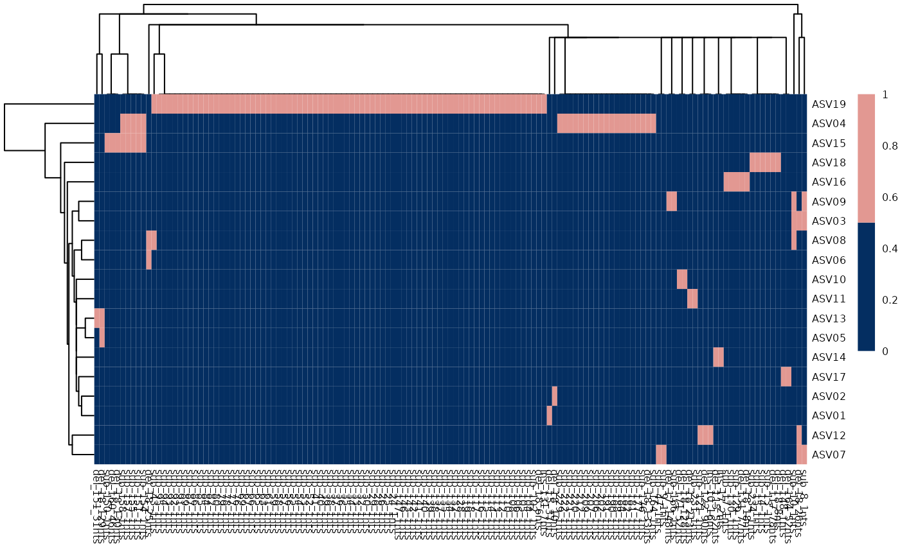
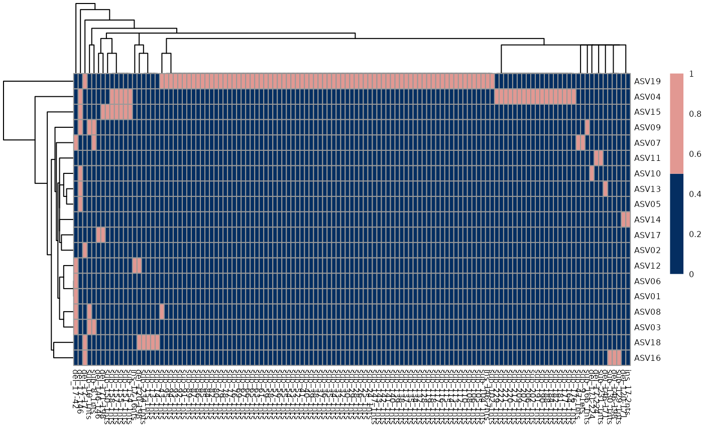

This function performs multi-sequence alignment and outputs statistics about mutations. Multiple Sequence Alignment is performed through the MUSCLE algorithm. This function also compute the binary matrix indicating the presence/absence of mutations in each ASV. Each mutation is characterized by a start position and an end position, it is thus identified through an ID which indicates the start, end and type of mutation.
perform_msa(REvoBC_object, ...)REvoBC object on which we want to perform msa.
Optional parameters (options and flags) passed to MUSCLE. See the original guide for detailed information on all possible options.
REvoBC object with a new field named alignment, which is a list with the following fileds:
msa_stringset: output of MSA peformed with MUSCLE.
mutations_df : (deprecated, will be removed).
asv_barcode_alignment: tibble where each line corresponds to a position in a ASV, and the columns encode the following information:
asv_names: name of the ASV
sample: sample identifier
position_bc260: position of the alteration in the original barcode. Note that insertions are assigned to the position that coincides with their beginning.
alt: type of alteration. wt = Wild Type (i.e. non-mutated position). sub = substitution. del = deletion. ins = insertion.
ref_asv,
read_asv: respectively, the reference nucleotide observed in the original barcode and the one observed on the sequence.
ASV_alterations_width: number of alterations for each type in each ASV
mutations_coordinates: tibble that stores all mutations identified on each ASV, indicating the start and end position and the nucleotides involved in the mutation
binary_mutation_matrix: binary matrix encoding presence/absence of mutations on ASVs.
mutations_frequency: tibble where for each position in each ASV you have the information about the frequency of the observed ASV in the sample.
This is useful to convey an idea about what is the fraction of total ASVs in each sample that are affected by that mutation in that position.
.
It also creates a new field in the REvoBC object called smoothed deletions, which contains the following information for
all the deletions identified in the ASVs, whose start and end site have been smoothed using the known cutting sites.
Smoothing is performed in the following way: the start site of each deletion is assigned to the cutting site on their left if that
is less distant then 5 nucleotides, otherwise they are assigned to the cutting site on their right. The end site is assigned to the
cutting site on its right if that is less than 5 nucleotides distant, otherwise it is assigned to the cutting site
on its left.
The following dataframes are stored in the field smoothed deletions:
binary_matrix: matrix |ASV| x |mutations|, which contains 1/0 if the mutation is respectively present or not in the ASV.
coordinate_matrix: matrix which stores all the information regardin the smoothed deletions. Information include start and end before smoothing and the deleted sequence.
In addition, the following files are saved in the sub-folder "msa" created in the output directory chosen by the user:
dnastringset.fa: fasta file where the sequences are stored.
dnastringset.fa: same as fasta, but in csv format.
dnastringset_muscle-muscle_msa.fasta: fasta with the stringset resulted from MUSCLE.
ASV_alterations_width.csv: number of alterations for each type in each ASV
mutations_frequency.csv: per sample normalized frequency of each alteration type, computed for each position of the barcode in each sample.
mutations_df.csv: content of mutations_df variable explained above.
mutations_coordinates: content of mutations_coordinates variable explained above.
binary_mutation_matrix: content of binary_mutation_matrix variable explained above.
All identified mutations are displayed in a heatmap, saved inside the folder msa_figures.
This function also produces an output figure that contain the frequency of
deletion, substitutions and insertions found in the different samples.
data(revo_analyzed)
output_dir = system.file("extdata", "output", package = "REvoBC")
revo_analyzed$output_directory = output_dir
revo_msa = perform_msa(revo_analyzed)
#>
#> MUSCLE v3.8.31 by Robert C. Edgar
#>
#> http://www.drive5.com/muscle
#> This software is donated to the public domain.
#> Please cite: Edgar, R.C. Nucleic Acids Res 32(5), 1792-97.
#>
#> filefb366106b091 20 seqs, max length 261, avg length 176
#> 1676 MB(24%)00:00:00 Iter 1 0.48% K-mer dist pass 1
1676 MB(24%)00:00:00 Iter 1 100.00% K-mer dist pass 1
#> 1676 MB(24%)00:00:00 Iter 1 0.48% K-mer dist pass 2
1676 MB(24%)00:00:00 Iter 1 100.00% K-mer dist pass 2
#> 1676 MB(24%)00:00:00 Iter 1 5.26% Align node
1676 MB(24%)00:00:00 Iter 1 10.53% Align node
1676 MB(24%)00:00:00 Iter 1 15.79% Align node
1676 MB(24%)00:00:00 Iter 1 21.05% Align node
1676 MB(24%)00:00:00 Iter 1 26.32% Align node
1676 MB(24%)00:00:00 Iter 1 31.58% Align node
1676 MB(24%)00:00:00 Iter 1 36.84% Align node
1676 MB(24%)00:00:00 Iter 1 42.11% Align node
1676 MB(24%)00:00:00 Iter 1 47.37% Align node
1676 MB(24%)00:00:00 Iter 1 52.63% Align node
1676 MB(24%)00:00:00 Iter 1 57.89% Align node
1676 MB(24%)00:00:00 Iter 1 63.16% Align node
1676 MB(24%)00:00:00 Iter 1 68.42% Align node
1676 MB(24%)00:00:00 Iter 1 73.68% Align node
1676 MB(24%)00:00:00 Iter 1 78.95% Align node
1676 MB(24%)00:00:00 Iter 1 84.21% Align node
1676 MB(24%)00:00:00 Iter 1 89.47% Align node
1676 MB(24%)00:00:00 Iter 1 94.74% Align node
1676 MB(24%)00:00:00 Iter 1 100.00% Align node
1676 MB(24%)00:00:00 Iter 1 100.00% Align node
#> 1676 MB(24%)00:00:00 Iter 1 5.00% Root alignment
1676 MB(24%)00:00:00 Iter 1 10.00% Root alignment
1676 MB(24%)00:00:00 Iter 1 15.00% Root alignment
1676 MB(24%)00:00:00 Iter 1 20.00% Root alignment
1676 MB(24%)00:00:00 Iter 1 25.00% Root alignment
1676 MB(24%)00:00:00 Iter 1 30.00% Root alignment
1676 MB(24%)00:00:00 Iter 1 35.00% Root alignment
1676 MB(24%)00:00:00 Iter 1 40.00% Root alignment
1676 MB(24%)00:00:00 Iter 1 45.00% Root alignment
1676 MB(24%)00:00:00 Iter 1 50.00% Root alignment
1676 MB(24%)00:00:00 Iter 1 55.00% Root alignment
1676 MB(24%)00:00:00 Iter 1 60.00% Root alignment
1676 MB(24%)00:00:00 Iter 1 65.00% Root alignment
1676 MB(24%)00:00:00 Iter 1 70.00% Root alignment
1676 MB(24%)00:00:00 Iter 1 75.00% Root alignment
1676 MB(24%)00:00:00 Iter 1 80.00% Root alignment
1676 MB(24%)00:00:00 Iter 1 85.00% Root alignment
1676 MB(24%)00:00:00 Iter 1 90.00% Root alignment
1676 MB(24%)00:00:00 Iter 1 95.00% Root alignment
1676 MB(24%)00:00:00 Iter 1 100.00% Root alignment
1676 MB(24%)00:00:00 Iter 1 100.00% Root alignment
#> 1676 MB(24%)00:00:00 Iter 2 5.56% Refine tree
1676 MB(24%)00:00:00 Iter 2 11.11% Refine tree
1676 MB(24%)00:00:00 Iter 2 16.67% Refine tree
1676 MB(24%)00:00:00 Iter 2 22.22% Refine tree
1676 MB(24%)00:00:00 Iter 2 27.78% Refine tree
1676 MB(24%)00:00:00 Iter 2 33.33% Refine tree
1676 MB(24%)00:00:00 Iter 2 38.89% Refine tree
1676 MB(24%)00:00:00 Iter 2 44.44% Refine tree
1676 MB(24%)00:00:00 Iter 2 50.00% Refine tree
1676 MB(24%)00:00:00 Iter 2 55.56% Refine tree
1676 MB(24%)00:00:00 Iter 2 61.11% Refine tree
1676 MB(24%)00:00:00 Iter 2 66.67% Refine tree
1676 MB(24%)00:00:00 Iter 2 72.22% Refine tree
1676 MB(24%)00:00:00 Iter 2 77.78% Refine tree
1676 MB(24%)00:00:00 Iter 2 83.33% Refine tree
1676 MB(24%)00:00:00 Iter 2 88.89% Refine tree
1676 MB(24%)00:00:00 Iter 2 94.44% Refine tree
1676 MB(24%)00:00:00 Iter 2 100.00% Refine tree
1676 MB(24%)00:00:00 Iter 2 105.56% Refine tree
1676 MB(24%)00:00:00 Iter 2 100.00% Refine tree
#> 1676 MB(24%)00:00:00 Iter 2 5.00% Root alignment
1676 MB(24%)00:00:00 Iter 2 10.00% Root alignment
1676 MB(24%)00:00:00 Iter 2 15.00% Root alignment
1676 MB(24%)00:00:00 Iter 2 20.00% Root alignment
1676 MB(24%)00:00:00 Iter 2 25.00% Root alignment
1676 MB(24%)00:00:00 Iter 2 30.00% Root alignment
1676 MB(24%)00:00:00 Iter 2 35.00% Root alignment
1676 MB(24%)00:00:00 Iter 2 40.00% Root alignment
1676 MB(24%)00:00:00 Iter 2 45.00% Root alignment
1676 MB(24%)00:00:00 Iter 2 50.00% Root alignment
1676 MB(24%)00:00:00 Iter 2 55.00% Root alignment
1676 MB(24%)00:00:00 Iter 2 60.00% Root alignment
1676 MB(24%)00:00:00 Iter 2 65.00% Root alignment
1676 MB(24%)00:00:00 Iter 2 70.00% Root alignment
1676 MB(24%)00:00:00 Iter 2 75.00% Root alignment
1676 MB(24%)00:00:00 Iter 2 80.00% Root alignment
1676 MB(24%)00:00:00 Iter 2 85.00% Root alignment
1676 MB(24%)00:00:00 Iter 2 90.00% Root alignment
1676 MB(24%)00:00:00 Iter 2 95.00% Root alignment
1676 MB(24%)00:00:00 Iter 2 100.00% Root alignment
1676 MB(24%)00:00:00 Iter 2 100.00% Root alignment
#> 1676 MB(24%)00:00:00 Iter 2 100.00% Root alignment
#> 1676 MB(24%)00:00:00 Iter 3 5.41% Refine biparts
1676 MB(24%)00:00:00 Iter 3 8.11% Refine biparts
1676 MB(24%)00:00:00 Iter 3 10.81% Refine biparts
1676 MB(24%)00:00:00 Iter 3 13.51% Refine biparts
1676 MB(24%)00:00:00 Iter 3 16.22% Refine biparts
1676 MB(24%)00:00:00 Iter 3 18.92% Refine biparts
1676 MB(24%)00:00:00 Iter 3 21.62% Refine biparts
1676 MB(24%)00:00:00 Iter 3 24.32% Refine biparts
1676 MB(24%)00:00:00 Iter 3 27.03% Refine biparts
1676 MB(24%)00:00:00 Iter 3 29.73% Refine biparts
1676 MB(24%)00:00:00 Iter 3 32.43% Refine biparts
1676 MB(24%)00:00:00 Iter 3 35.14% Refine biparts
1676 MB(24%)00:00:00 Iter 3 37.84% Refine biparts
1676 MB(24%)00:00:00 Iter 3 40.54% Refine biparts
1676 MB(24%)00:00:00 Iter 3 43.24% Refine biparts
1676 MB(24%)00:00:00 Iter 3 45.95% Refine biparts
1676 MB(24%)00:00:00 Iter 3 48.65% Refine biparts
1676 MB(24%)00:00:00 Iter 3 51.35% Refine biparts
1676 MB(24%)00:00:00 Iter 3 54.05% Refine biparts
1676 MB(24%)00:00:00 Iter 3 56.76% Refine biparts
1676 MB(24%)00:00:00 Iter 3 59.46% Refine biparts
1676 MB(24%)00:00:00 Iter 3 62.16% Refine biparts
1676 MB(24%)00:00:00 Iter 3 64.86% Refine biparts
1676 MB(24%)00:00:00 Iter 3 67.57% Refine biparts
1676 MB(24%)00:00:00 Iter 3 70.27% Refine biparts
1676 MB(24%)00:00:00 Iter 3 72.97% Refine biparts
1676 MB(24%)00:00:00 Iter 3 75.68% Refine biparts
1676 MB(24%)00:00:00 Iter 3 78.38% Refine biparts
1676 MB(24%)00:00:00 Iter 3 81.08% Refine biparts
1676 MB(24%)00:00:00 Iter 3 83.78% Refine biparts
1676 MB(24%)00:00:00 Iter 3 86.49% Refine biparts
1676 MB(24%)00:00:00 Iter 3 89.19% Refine biparts
1676 MB(24%)00:00:00 Iter 3 91.89% Refine biparts
1676 MB(24%)00:00:00 Iter 3 94.59% Refine biparts
1676 MB(24%)00:00:00 Iter 3 97.30% Refine biparts
1676 MB(24%)00:00:00 Iter 3 100.00% Refine biparts
1676 MB(24%)00:00:00 Iter 3 102.70% Refine biparts
1676 MB(24%)00:00:00 Iter 3 100.00% Refine biparts
#> 1676 MB(24%)00:00:00 Iter 4 5.41% Refine biparts
1676 MB(24%)00:00:00 Iter 4 8.11% Refine biparts
1676 MB(24%)00:00:00 Iter 4 10.81% Refine biparts
1676 MB(24%)00:00:00 Iter 4 13.51% Refine biparts
1676 MB(24%)00:00:00 Iter 4 16.22% Refine biparts
1676 MB(24%)00:00:00 Iter 4 18.92% Refine biparts
1676 MB(24%)00:00:00 Iter 4 21.62% Refine biparts
1676 MB(24%)00:00:00 Iter 4 24.32% Refine biparts
1676 MB(24%)00:00:00 Iter 4 27.03% Refine biparts
1676 MB(24%)00:00:00 Iter 4 29.73% Refine biparts
1676 MB(24%)00:00:00 Iter 4 32.43% Refine biparts
1676 MB(24%)00:00:00 Iter 4 35.14% Refine biparts
1676 MB(24%)00:00:00 Iter 4 37.84% Refine biparts
1676 MB(24%)00:00:00 Iter 4 40.54% Refine biparts
1676 MB(24%)00:00:00 Iter 4 43.24% Refine biparts
1676 MB(24%)00:00:00 Iter 4 45.95% Refine biparts
1676 MB(24%)00:00:00 Iter 4 48.65% Refine biparts
1676 MB(24%)00:00:00 Iter 4 51.35% Refine biparts
1676 MB(24%)00:00:00 Iter 4 54.05% Refine biparts
1676 MB(24%)00:00:00 Iter 4 56.76% Refine biparts
1676 MB(24%)00:00:00 Iter 4 59.46% Refine biparts
1676 MB(24%)00:00:00 Iter 4 62.16% Refine biparts
1676 MB(24%)00:00:00 Iter 4 64.86% Refine biparts
1676 MB(24%)00:00:00 Iter 4 67.57% Refine biparts
1676 MB(24%)00:00:00 Iter 4 70.27% Refine biparts
1676 MB(24%)00:00:00 Iter 4 72.97% Refine biparts
1676 MB(24%)00:00:00 Iter 4 75.68% Refine biparts
1676 MB(24%)00:00:00 Iter 4 78.38% Refine biparts
1676 MB(24%)00:00:00 Iter 4 81.08% Refine biparts
1676 MB(24%)00:00:00 Iter 4 83.78% Refine biparts
1676 MB(24%)00:00:00 Iter 4 86.49% Refine biparts
1676 MB(24%)00:00:00 Iter 4 89.19% Refine biparts
1676 MB(24%)00:00:00 Iter 4 91.89% Refine biparts
1676 MB(24%)00:00:00 Iter 4 94.59% Refine biparts
1676 MB(24%)00:00:00 Iter 4 97.30% Refine biparts
1676 MB(24%)00:00:00 Iter 4 100.00% Refine biparts
1676 MB(24%)00:00:00 Iter 4 102.70% Refine biparts
1676 MB(24%)00:00:00 Iter 4 100.00% Refine biparts
#> 1676 MB(24%)00:00:00 Iter 5 5.41% Refine biparts
1676 MB(24%)00:00:00 Iter 5 8.11% Refine biparts
1676 MB(24%)00:00:01 Iter 5 10.81% Refine biparts
1676 MB(24%)00:00:01 Iter 5 100.00% Refine biparts
#> 1676 MB(24%)00:00:01 Iter 5 100.00% Refine biparts
#> Warning: position_stack requires non-overlapping x intervals
#> Warning: position_stack requires non-overlapping x intervals

